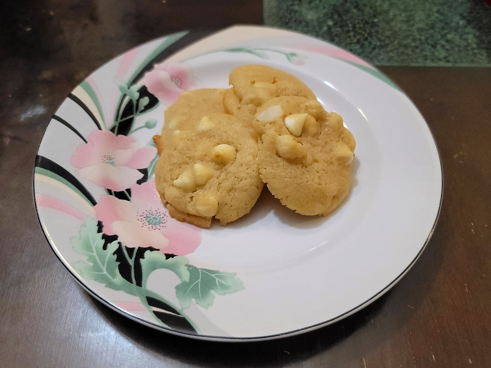

White Chocolate Macadamia Nut Cookies

Ingredients:
- 1 cup Butter, softened
- 3/4 cup Light brown sugar
- 1/2 cup Sugar
- 2 Eggs
- 1/2 tsp Vanilla extract
- 1/2 tsp Almond extract
- 2 1/2 cups (300 grams) Flour
- 1 tsp Baking powder
- 1/2 tsp Salt
- 1 cup Macadamia nuts, coarsely chopped
- 1 cup White chocolate chips
Instructions:
- Add the butter and sugars to a large mixing bowl. Cream together with an electric hand mixer. Then beat in the eggs one at a time. Then beat in the vanilla and almond extract.
- In a separate bowl, mix together the flour, baking powder, and salt. Whisk to combine. Then transfer to the wet ingredient bowl and mix until combined. Then fold in the white chocolate and macadamia nuts. Let chill in a fridge for about 2 hours or overnight.
- Preheat an oven to 350 degrees Fahrenheit.
- Place generous teaspoonfuls of the cookie dough about 2 inches apart onto a baking sheet. Bake for about 11 minutes or until you just start to see it crisping around the edges.
- Remove from the oven and let cool for a few minutes. Serve once firm enough to handle.